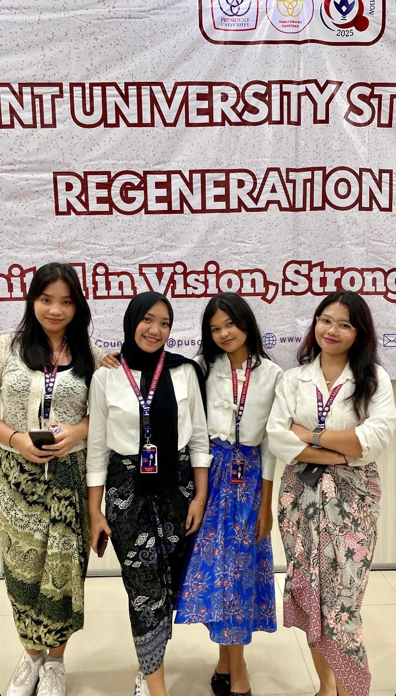
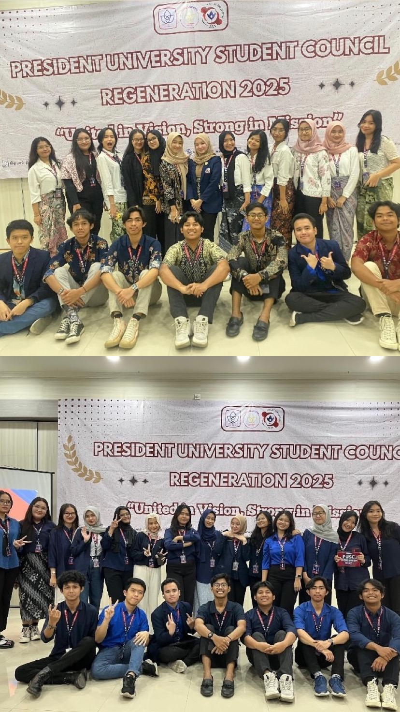
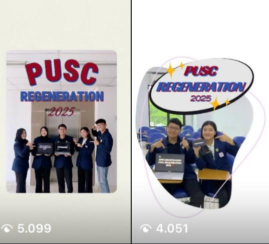
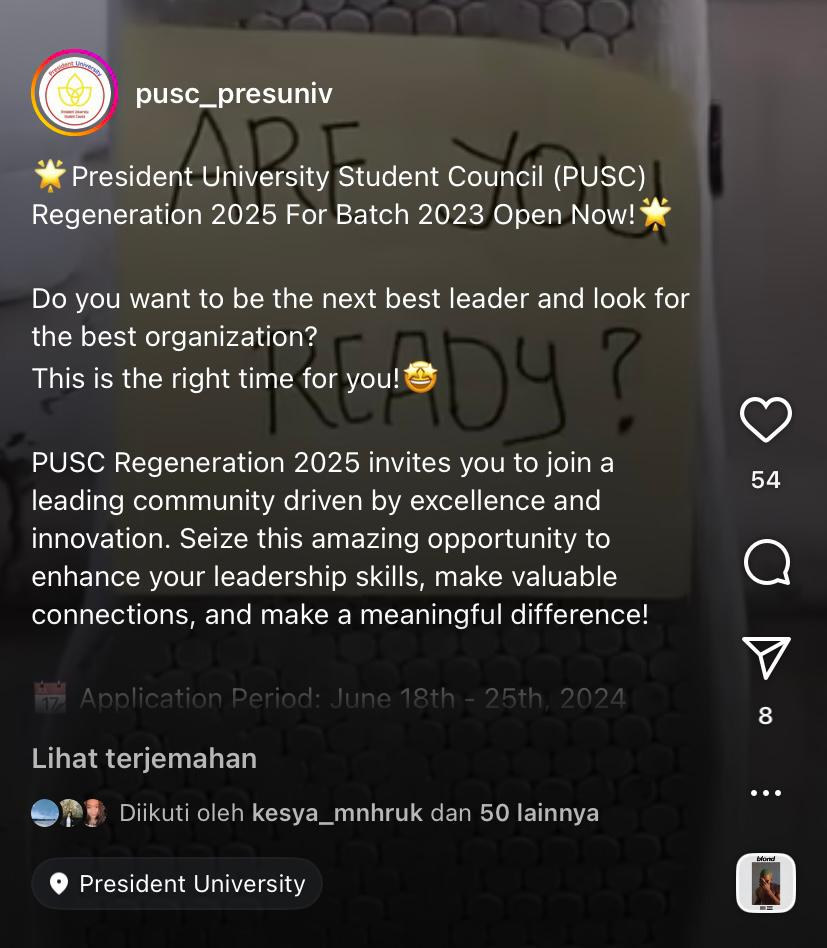
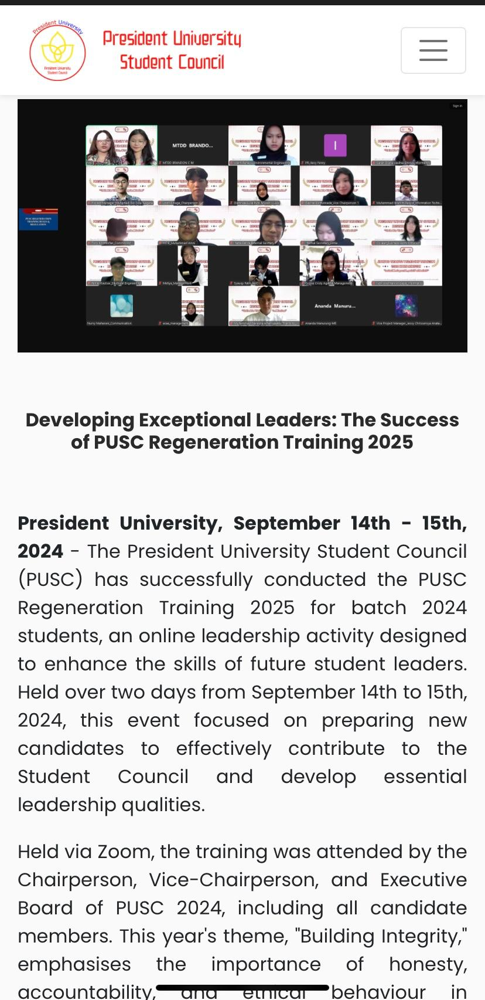
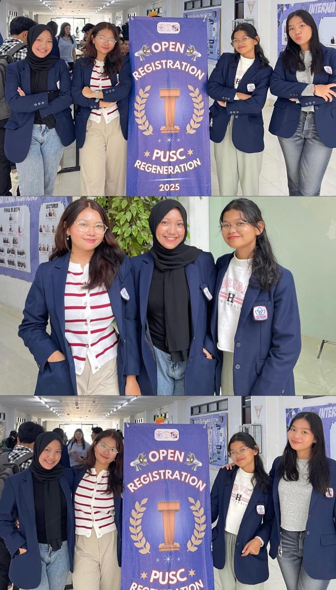

PIC of Public Relations – PUSC Regeneration 2025
Period: June – Sept 2024
I was responsible for leading public relations strategy for PUSC Regeneration 2025. I focused on enhancing public outreach, content creation, and smooth coordination across various events.
- Executed strategic communications across platforms to raise awareness and drive participation.
- Coordinated booth activation with proper scheduling and placement to engage students effectively.
- Created and distributed visual and written content including press releases and promotional posts.
- Served as MC during two major event days, ensuring lively engagement and flow with well-prepared scripts.
📸 Event Documentation

With PR division team while executing tasks during the event day.

Cross-division collaboration on-site during PUSC Regeneration.

Moment as MC delivering opening and closing ceremony flow.
🎯 PR Campaign Highlights & Media Contributions

Instagram content to promote PUSC Regeneration 2025.
PR isn’t just visuals — it’s the words too.

Official press release documenting the PUSC Regeneration 2025 event.

Banner used at the campus open booth for registration.